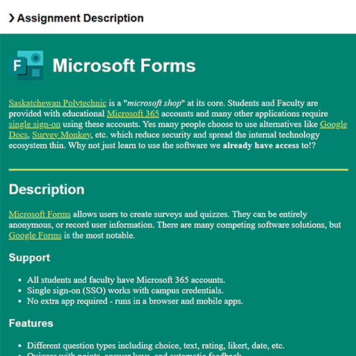
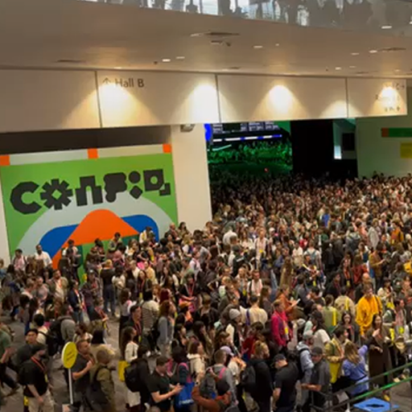

Technology

Technology competency focuses on exploring and integrating a variety of digital technologies into instructional practice and to enhance learner experience and success. This includes utilizing technology to communicate equitably, to enhance accessibility and inclusion, to foster its use in safe, critical, and ethical ways, and to explore the use of emerging technologies in teaching and learning.

(Click to View)
LIFT-1007 Microsoft Forms
As part of LIFT-1007 Learning Technologies in September 2025, I outlined how using Microsoft Forms could be used in the classroom in multiple ways.
This module focused on selecting technology intentionally rather than simply adopting new tools. In the Interactive Design & Technology program, we try to use tools that align with the technologies we teach students. Similarly, I believe instructors should take advantage of the technology ecosystem we already have acess to, namely Microsoft 365.
Although many people already have acess to Microsoft 365, its full range of tools is often underused. I took the opportunity to showcase using Microsoft Forms, which I use regularly in class for quick feedback, anonymous comments, and more. This assignment reinforced the importance of choosing technologies that are accessible, secure, and easy for both students and instructors to use.

(Click to View)
CONFIG Conference 2024
As part of my professional development in June 2024, I attended the Figma Config conference after receiving funding support from the Faculty of Digital, Information, and Applied Sciences.
Config is Figma's annual conference where designers, developers, and educators explore new tools and workflows shaping modern digital product design. The 2024 conference introduced several major updates to the platform, including Figma AI tools, Figma Slides, a redesigned interface (UI3), and improvements to Dev Mode that strengthen collaboration between designers and developers.
Attending the conference allowed me to see these technologies demonstrated directly by the teams building them and to participate in sessions focused on real-world design workflows. These insights helped me better understand how modern product teams collaborate, particularly the growing overlap between design systems, prototyping, and development handoff.
Bringing this knowledge back to the classroom allows me to keep course content current with industry practice. Many of the workflows and features discussed at Config now appear in the tools students use in courses such as UX/UI design and interactive prototyping, helping ensure students are learning with technologies that reflect current industry practice.